2026-10-22 · 选池、生成、交集、冻结状态与复盘。沿用原有界面样式，优先减少找入口和找结果的步骤。
审查对象：双色球应用。截图来自本次真实页面；修改前为生产站，修改后为使用实际数据与原档的隔离副本。生产全程不为验收生成或封存新推荐。
已有优点：小池14／16／18红入口清楚；实际留档和回放分开；待开奖不计为漏中；交集保留原始来源。
发现（优先级中）：390px宽度下只露出约两个页签，后续功能需要横向寻找。14／16／18红入口本身清楚，默认16红可以保留。
修改：手机端用带当前值的功能选择器完整列出七项功能；电脑端保留页签，增加方向键、Home、End和单一Tab停靠点。
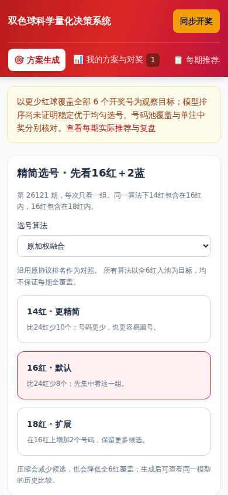
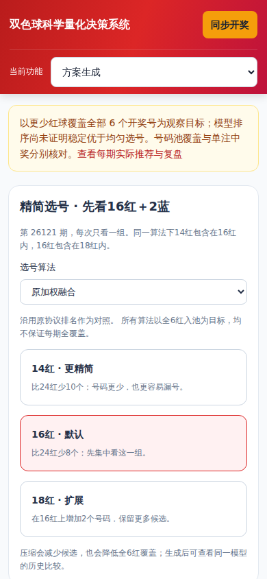
发现（优先级高）：点击16红后仍停留在选号区，结果顶部位于视窗外（本次390×844实测y=1112.84px，scrollY=0）。成功提示还会挤动内容。
修改：结果移到选号区后，成功时自动定位和聚焦；红蓝号码分行加文字标签，历史覆盖与基准折叠查看。通知浮在页面下方，不再推挤内容。
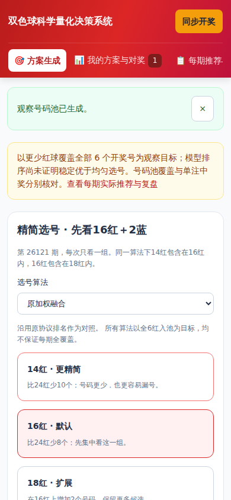
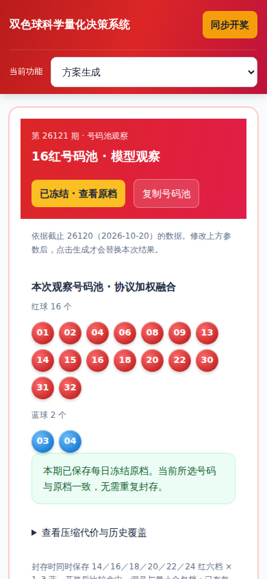
发现（优先级中）：两个来源的模型及数量设置占据手机一屏，交集数量和复制操作位于下方，修改设置后不易立刻判断剩余号码。
修改：设置前增加实时来源数、交集红蓝数和相对最小来源池减少的红球数；一键定位并聚焦交集号码。原交集数学、复制与导出含义保持一致。
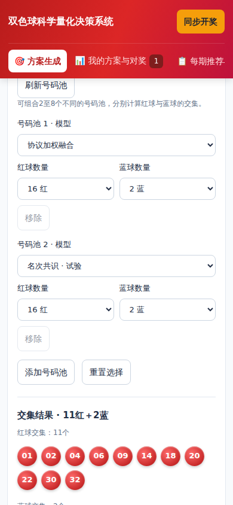
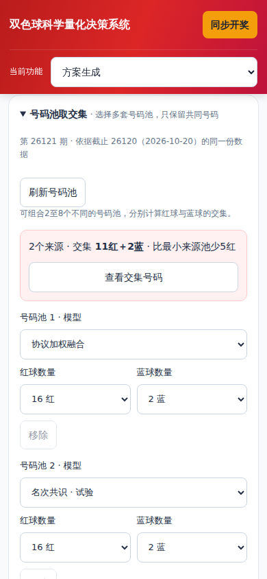
发现（优先级高）：本期26121每日档案已经自动冻结，但生成页仍展示“封存六档观察池”，未直接表明当前所选号码是否与原档一致。审查过程未点击生产封存按钮。
修改：生成时只读核对本期每日原档、输入摘要、模型、红蓝规格及具体号码。已有原档显示“已冻结 · 查看原档”；不一致时明确以原档为准；读取失败保持未核对状态，不宣称已保存。
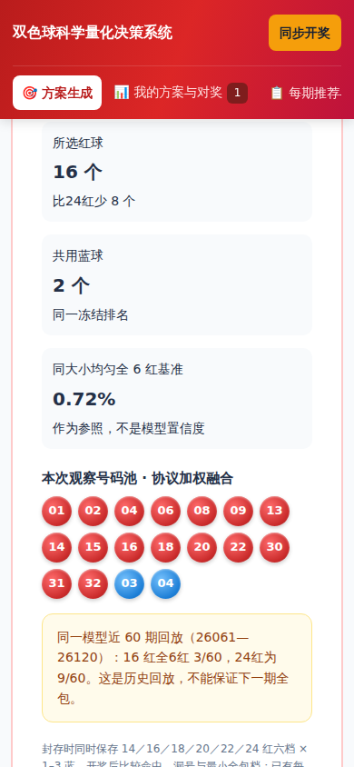
发现（优先级中）：期号和来源后还堆叠展示期数、刷新、核对、下一期留档及截止说明，挤占复盘首屏；进入模型池、交集诊断或完整票组需要继续向下寻找。
修改：期号和来源保持可见，管理操作收进可展开区域；新增三项定位入口，移动端提示横向滑动档位表。待开奖指标留空，原档覆盖及交集损失计算不变。
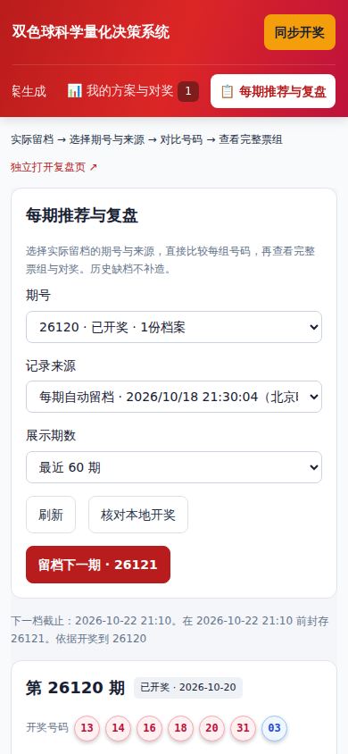
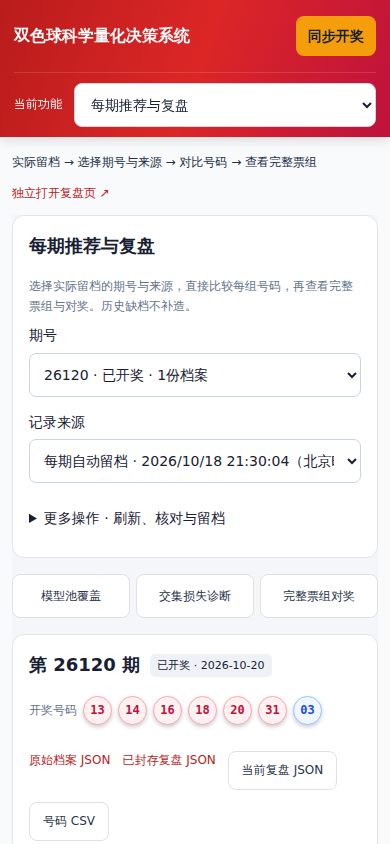
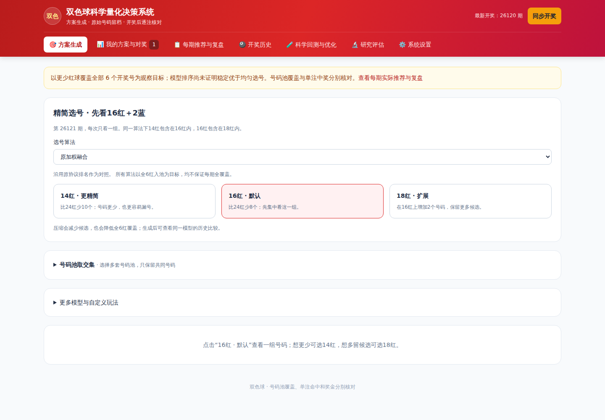
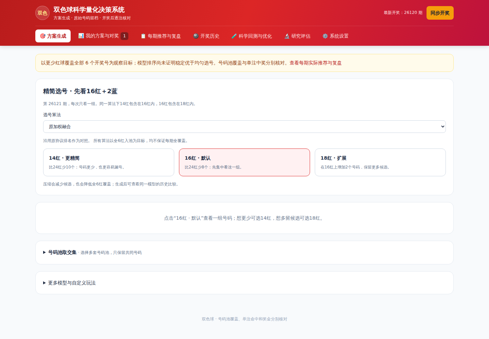
78项Rust测试通过，发布构建通过。浏览器核验焦点定位、复制、原档核对、三个复盘入口、交集计算、导出、320／390／768／1440px页面溢出及失败状态；原协议预测和模型号码池与修改前一致。
逐项机器核验见同目录的 验证记录。